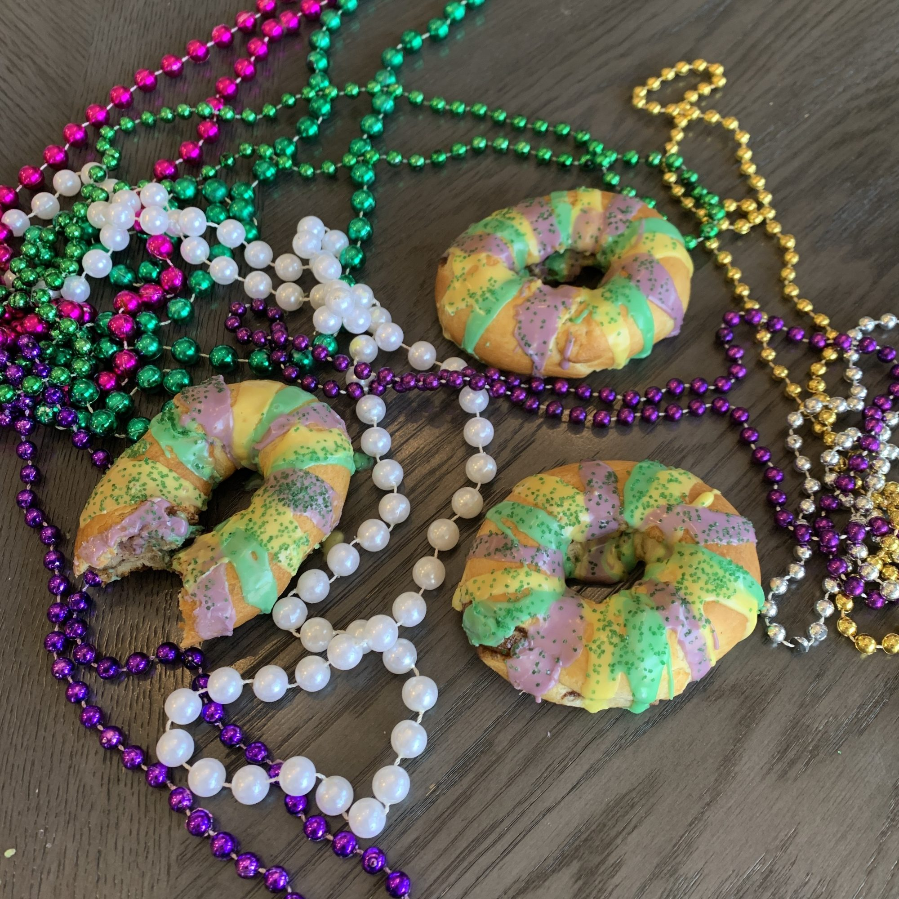

Easy Mini King Cakes

Description
Let the good times roll! Turn a can of crescent roll dough into sweet, buttery, cinnamon- and sugar-filled cakes that are a fun treat for Mardi Gras. They're easy to make and much cheaper than the ones you'd find at a bakery. Serve with a hot cup of coffee or a cold glass of milk.
Ingredients
- cooking spray
- ½ cup brown sugar
- ¼ cup unsalted butter, softened
- 1 tablespoon ground cinnamon
- 1 (8 ounce) can refrigerated crescent roll dough
- 1½ cups powdered sugar
- 1½ tablespoons milk
- 2 drops green food coloring, or as needed
- 2 drops yellow food coloring, or as needed
- 2 drops purple food coloring, or as needed
- 1 pinch colored sugar or festive sprinkles
Directions
- Preheat the oven to 360 degrees F (182 degrees C). Spray the air fryer basket with cooking spray.
- Stir brown sugar, butter, and cinnamon together in a small bowl until smooth.
- Remove crescent roll dough from the can and separate into 4 rectangles. Press the seams together tightly to seal the dough.
- Spread butter mixture evenly over each rectangle, not going all the way to the edges. Start at the bottom of each long edge and roll tightly into a 10-inch log, sealing any open seams. Bring the ends of each roll together to form an oval shape, making sure you press tightly to seal so the filling doesn't ooze out in the air fryer and burn.
- Place one or two at a time in the prepared air fryer basket without overcrowding.
- Air-fry in the preheated air fryer for 5 minutes per batch. Remove to a wire rack and cool.
- Meanwhile, whisk powdered sugar and milk together until smooth. Divide mixture among 3 bowls. Add food coloring to each bowl.
- Drizzle icing over each cooled cake and decorate with sugar or sprinkles. Let icing dry before serving, about 10 minutes.